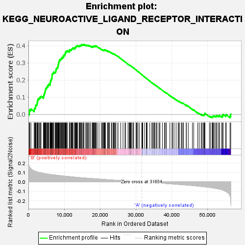
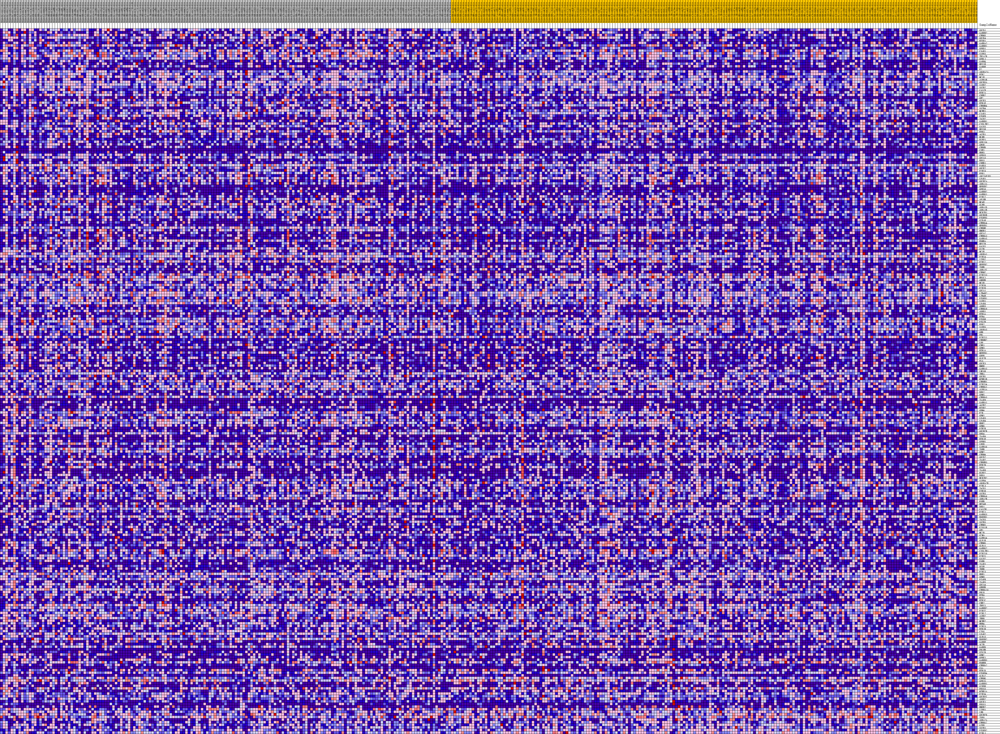
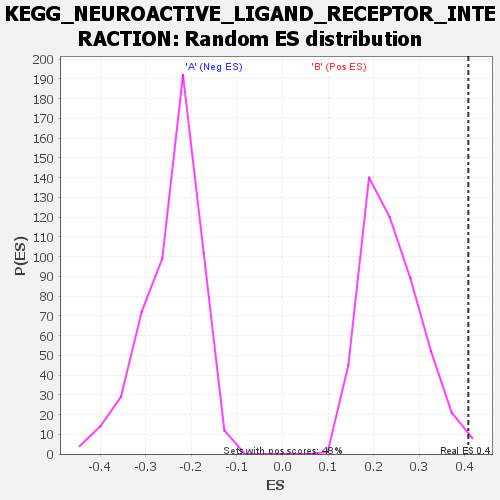

| | | Dataset | my.my.cls#B_versus_A.my.cls#B_versus_A_repos |
| Phenotype | my.cls#B_versus_A_repos |
| Upregulated in class | B |
| GeneSet | KEGG_NEUROACTIVE_LIGAND_RECEPTOR_INTERACTION |
| Enrichment Score (ES) | 0.40821552 |
| Normalized Enrichment Score (NES) | 1.6915871 |
| Nominal p-value | 0.006302521 |
| FDR q-value | 0.67392045 |
| FWER p-Value | 0.481 |
Table: GSEA Results Summary

Fig 1: Enrichment plot: KEGG_NEUROACTIVE_LIGAND_RECEPTOR_INTERACTION
Profile of the Running ES Score & Positions of GeneSet Members on the Rank Ordered List
| SYMBOL | TITLE | RANK IN GENE LIST | RANK METRIC SCORE | RUNNING ES | CORE ENRICHMENT | | 1 | GRID1 | na | 244 | 0.161 | 0.0074 | Yes |
| 2 | GABRB2 | na | 280 | 0.159 | 0.0183 | Yes |
| 3 | CHRM3 | na | 397 | 0.150 | 0.0272 | Yes |
| 4 | GRIK4 | na | 711 | 0.138 | 0.0317 | Yes |
| 5 | NTSR1 | na | 1630 | 0.117 | 0.0239 | Yes |
| 6 | GABRA2 | na | 1636 | 0.117 | 0.0324 | Yes |
| 7 | GABBR1 | na | 1835 | 0.114 | 0.0371 | Yes |
| 8 | OPRD1 | na | 1957 | 0.112 | 0.0431 | Yes |
| 9 | C3AR1 | na | 2000 | 0.111 | 0.0505 | Yes |
| 10 | S1PR3 | na | 2140 | 0.110 | 0.0560 | Yes |
| 11 | TBXA2R | na | 2380 | 0.107 | 0.0595 | Yes |
| 12 | OPRL1 | na | 2451 | 0.106 | 0.0660 | Yes |
| 13 | GABRQ | na | 2475 | 0.106 | 0.0733 | Yes |
| 14 | NPY1R | na | 2588 | 0.105 | 0.0789 | Yes |
| 15 | GABRE | na | 2618 | 0.104 | 0.0860 | Yes |
| 16 | F2 | na | 2729 | 0.103 | 0.0915 | Yes |
| 17 | ADORA2A | na | 2999 | 0.101 | 0.0941 | Yes |
| 18 | HTR7 | na | 3133 | 0.099 | 0.0990 | Yes |
| 19 | MC1R | na | 3382 | 0.097 | 0.1016 | Yes |
| 20 | AVPR1B | na | 3535 | 0.096 | 0.1059 | Yes |
| 21 | GRIN3A | na | 4208 | 0.091 | 0.1006 | Yes |
| 22 | S1PR2 | na | 4245 | 0.091 | 0.1066 | Yes |
| 23 | SSTR2 | na | 4279 | 0.090 | 0.1125 | Yes |
| 24 | CALCR | na | 4380 | 0.090 | 0.1173 | Yes |
| 25 | HTR2A | na | 4482 | 0.089 | 0.1220 | Yes |
| 26 | CRHR2 | na | 4583 | 0.088 | 0.1266 | Yes |
| 27 | GH2 | na | 4608 | 0.088 | 0.1326 | Yes |
| 28 | GRIK5 | na | 4704 | 0.087 | 0.1373 | Yes |
| 29 | HTR1F | na | 4766 | 0.087 | 0.1425 | Yes |
| 30 | CHRNB4 | na | 4783 | 0.087 | 0.1486 | Yes |
| 31 | SSTR4 | na | 4932 | 0.086 | 0.1522 | Yes |
| 32 | MCHR1 | na | 5047 | 0.085 | 0.1564 | Yes |
| 33 | C5AR1 | na | 5223 | 0.084 | 0.1594 | Yes |
| 34 | PTGFR | na | 5404 | 0.083 | 0.1623 | Yes |
| 35 | TACR2 | na | 5408 | 0.083 | 0.1683 | Yes |
| 36 | GABRB1 | na | 5542 | 0.082 | 0.1719 | Yes |
| 37 | CYSLTR2 | na | 5653 | 0.082 | 0.1759 | Yes |
| 38 | GALR3 | na | 6032 | 0.080 | 0.1750 | Yes |
| 39 | NPY5R | na | 6045 | 0.080 | 0.1806 | Yes |
| 40 | FPR3 | na | 6059 | 0.080 | 0.1861 | Yes |
| 41 | AGTR1 | na | 6152 | 0.079 | 0.1902 | Yes |
| 42 | MLNR | na | 6208 | 0.079 | 0.1950 | Yes |
| 43 | RXFP1 | na | 6302 | 0.078 | 0.1990 | Yes |
| 44 | GPR156 | na | 6377 | 0.078 | 0.2034 | Yes |
| 45 | GHSR | na | 6464 | 0.077 | 0.2075 | Yes |
| 46 | CHRND | na | 6538 | 0.077 | 0.2118 | Yes |
| 47 | CSH1 | na | 6577 | 0.077 | 0.2167 | Yes |
| 48 | HRH3 | na | 6597 | 0.077 | 0.2219 | Yes |
| 49 | GPR83 | na | 6603 | 0.077 | 0.2274 | Yes |
| 50 | GRIA3 | na | 6661 | 0.076 | 0.2320 | Yes |
| 51 | BRS3 | na | 6688 | 0.076 | 0.2371 | Yes |
| 52 | CRHR1 | na | 6837 | 0.075 | 0.2399 | Yes |
| 53 | PARD3 | na | 7010 | 0.075 | 0.2423 | Yes |
| 54 | GRIK2 | na | 7043 | 0.075 | 0.2472 | Yes |
| 55 | P2RX6 | na | 7407 | 0.073 | 0.2460 | Yes |
| 56 | FPR1 | na | 7585 | 0.072 | 0.2481 | Yes |
| 57 | ADCYAP1R1 | na | 7668 | 0.072 | 0.2519 | Yes |
| 58 | LPAR1 | na | 7669 | 0.072 | 0.2571 | Yes |
| 59 | GRIN2A | na | 7741 | 0.071 | 0.2610 | Yes |
| 60 | ADRA1A | na | 7759 | 0.071 | 0.2659 | Yes |
| 61 | NPBWR2 | na | 7912 | 0.070 | 0.2683 | Yes |
| 62 | GPR50 | na | 7990 | 0.070 | 0.2721 | Yes |
| 63 | GABBR2 | na | 8189 | 0.069 | 0.2736 | Yes |
| 64 | GABRG1 | na | 8237 | 0.069 | 0.2778 | Yes |
| 65 | P2RX2 | na | 8255 | 0.069 | 0.2825 | Yes |
| 66 | APLNR | na | 8272 | 0.069 | 0.2873 | Yes |
| 67 | MC4R | na | 8341 | 0.069 | 0.2911 | Yes |
| 68 | GLRB | na | 8406 | 0.068 | 0.2949 | Yes |
| 69 | ADRA1D | na | 8430 | 0.068 | 0.2995 | Yes |
| 70 | ADRA1B | na | 8481 | 0.068 | 0.3035 | Yes |
| 71 | HCRTR1 | na | 8522 | 0.068 | 0.3078 | Yes |
| 72 | GRIN3B | na | 8644 | 0.067 | 0.3105 | Yes |
| 73 | PTGER3 | na | 8701 | 0.067 | 0.3144 | Yes |
| 74 | CCKAR | na | 8734 | 0.067 | 0.3187 | Yes |
| 75 | CHRNA4 | na | 8969 | 0.066 | 0.3194 | Yes |
| 76 | NPBWR1 | na | 9070 | 0.066 | 0.3224 | Yes |
| 77 | CHRNE | na | 9162 | 0.065 | 0.3255 | Yes |
| 78 | NMUR1 | na | 9337 | 0.065 | 0.3271 | Yes |
| 79 | GRIA2 | na | 9344 | 0.065 | 0.3317 | Yes |
| 80 | CHRNA3 | na | 9510 | 0.064 | 0.3334 | Yes |
| 81 | GABRA5 | na | 9746 | 0.063 | 0.3338 | Yes |
| 82 | EDNRA | na | 9755 | 0.063 | 0.3382 | Yes |
| 83 | NPY2R | na | 9826 | 0.062 | 0.3415 | Yes |
| 84 | GALR1 | na | 9881 | 0.062 | 0.3451 | Yes |
| 85 | OXTR | na | 10118 | 0.061 | 0.3454 | Yes |
| 86 | MC3R | na | 10177 | 0.061 | 0.3488 | Yes |
| 87 | ADORA1 | na | 10231 | 0.061 | 0.3523 | Yes |
| 88 | P2RX4 | na | 10284 | 0.061 | 0.3558 | Yes |
| 89 | VIPR2 | na | 10332 | 0.061 | 0.3593 | Yes |
| 90 | P2RX7 | na | 10438 | 0.060 | 0.3618 | Yes |
| 91 | NPFFR2 | na | 10439 | 0.060 | 0.3662 | Yes |
| 92 | TSHB | na | 10595 | 0.059 | 0.3678 | Yes |
| 93 | ADRA2C | na | 10822 | 0.059 | 0.3680 | Yes |
| 94 | CHRM2 | na | 10849 | 0.059 | 0.3718 | Yes |
| 95 | P2RY13 | na | 11415 | 0.056 | 0.3659 | Yes |
| 96 | NR3C1 | na | 11428 | 0.056 | 0.3698 | Yes |
| 97 | GNRHR | na | 11445 | 0.056 | 0.3736 | Yes |
| 98 | MC5R | na | 11512 | 0.056 | 0.3765 | Yes |
| 99 | P2RY6 | na | 11774 | 0.055 | 0.3759 | Yes |
| 100 | P2RY8 | na | 11967 | 0.054 | 0.3765 | Yes |
| 101 | GRIA1 | na | 12036 | 0.054 | 0.3792 | Yes |
| 102 | LTB4R2 | na | 12133 | 0.054 | 0.3814 | Yes |
| 103 | LTB4R | na | 12231 | 0.053 | 0.3836 | Yes |
| 104 | PTGER1 | na | 12377 | 0.053 | 0.3849 | Yes |
| 105 | S1PR1 | na | 12461 | 0.053 | 0.3872 | Yes |
| 106 | LPAR6 | na | 12836 | 0.051 | 0.3843 | Yes |
| 107 | ADRB3 | na | 12840 | 0.051 | 0.3880 | Yes |
| 108 | CHRNA9 | na | 13095 | 0.050 | 0.3872 | Yes |
| 109 | ADRB1 | na | 13153 | 0.050 | 0.3898 | Yes |
| 110 | HTR5A | na | 13218 | 0.050 | 0.3923 | Yes |
| 111 | HTR4 | na | 13249 | 0.050 | 0.3954 | Yes |
| 112 | PTGDR | na | 13346 | 0.049 | 0.3973 | Yes |
| 113 | PTGIR | na | 13511 | 0.049 | 0.3979 | Yes |
| 114 | FPR2 | na | 13618 | 0.049 | 0.3996 | Yes |
| 115 | S1PR5 | na | 13728 | 0.048 | 0.4011 | Yes |
| 116 | ADORA3 | na | 14155 | 0.047 | 0.3969 | Yes |
| 117 | GHR | na | 14216 | 0.046 | 0.3993 | Yes |
| 118 | PRL | na | 14378 | 0.046 | 0.3997 | Yes |
| 119 | P2RY11 | na | 14409 | 0.046 | 0.4025 | Yes |
| 120 | CHRNB2 | na | 14655 | 0.045 | 0.4015 | Yes |
| 121 | LEP | na | 14695 | 0.045 | 0.4041 | Yes |
| 122 | CNR1 | na | 14844 | 0.044 | 0.4047 | Yes |
| 123 | GRM3 | na | 14871 | 0.044 | 0.4074 | Yes |
| 124 | HTR1A | na | 15181 | 0.043 | 0.4051 | Yes |
| 125 | NPFFR1 | na | 15304 | 0.043 | 0.4061 | Yes |
| 126 | GRPR | na | 15501 | 0.042 | 0.4057 | Yes |
| 127 | GLP2R | na | 15531 | 0.042 | 0.4082 | Yes |
| 128 | PLG | na | 16036 | 0.041 | 0.4022 | No |
| 129 | GRIK3 | na | 16114 | 0.041 | 0.4038 | No |
| 130 | NMBR | na | 16338 | 0.040 | 0.4028 | No |
| 131 | GABRA3 | na | 16538 | 0.039 | 0.4021 | No |
| 132 | LHCGR | na | 16761 | 0.039 | 0.4010 | No |
| 133 | THRA | na | 16806 | 0.038 | 0.4030 | No |
| 134 | GRIN1 | na | 17113 | 0.038 | 0.4003 | No |
| 135 | MTNR1B | na | 17417 | 0.037 | 0.3976 | No |
| 136 | CHRNB1 | na | 17844 | 0.035 | 0.3926 | No |
| 137 | P2RY14 | na | 17933 | 0.035 | 0.3936 | No |
| 138 | CHRNA1 | na | 17968 | 0.035 | 0.3956 | No |
| 139 | AVPR1A | na | 18113 | 0.035 | 0.3955 | No |
| 140 | DRD2 | na | 18162 | 0.035 | 0.3972 | No |
| 141 | GRM5 | na | 18248 | 0.034 | 0.3982 | No |
| 142 | CHRNA5 | na | 18440 | 0.034 | 0.3973 | No |
| 143 | TAAR9 | na | 18633 | 0.033 | 0.3963 | No |
| 144 | GABRA1 | na | 18641 | 0.033 | 0.3986 | No |
| 145 | AGTR2 | na | 18804 | 0.033 | 0.3981 | No |
| 146 | NTSR2 | na | 18934 | 0.032 | 0.3982 | No |
| 147 | GRM4 | na | 19225 | 0.032 | 0.3953 | No |
| 148 | F2R | na | 19730 | 0.030 | 0.3886 | No |
| 149 | GRM1 | na | 20365 | 0.029 | 0.3794 | No |
| 150 | LPAR3 | na | 20616 | 0.028 | 0.3770 | No |
| 151 | LPAR4 | na | 20811 | 0.027 | 0.3756 | No |
| 152 | HRH2 | na | 21043 | 0.027 | 0.3734 | No |
| 153 | GRM6 | na | 21103 | 0.027 | 0.3743 | No |
| 154 | PTH2R | na | 21196 | 0.026 | 0.3746 | No |
| 155 | GRIN2B | na | 21313 | 0.026 | 0.3744 | No |
| 156 | DRD4 | na | 21326 | 0.026 | 0.3761 | No |
| 157 | TAAR6 | na | 21502 | 0.026 | 0.3748 | No |
| 158 | HTR1E | na | 21538 | 0.025 | 0.3760 | No |
| 159 | OPRM1 | na | 22112 | 0.024 | 0.3676 | No |
| 160 | LEPR | na | 22177 | 0.024 | 0.3682 | No |
| 161 | GABRA6 | na | 22186 | 0.024 | 0.3698 | No |
| 162 | TSHR | na | 22422 | 0.023 | 0.3673 | No |
| 163 | GRM2 | na | 22625 | 0.023 | 0.3654 | No |
| 164 | CHRM4 | na | 22693 | 0.022 | 0.3658 | No |
| 165 | GRID2 | na | 23193 | 0.021 | 0.3585 | No |
| 166 | TAAR2 | na | 23315 | 0.021 | 0.3578 | No |
| 167 | CHRNB3 | na | 23709 | 0.020 | 0.3523 | No |
| 168 | HTR2B | na | 23724 | 0.020 | 0.3535 | No |
| 169 | DRD5 | na | 23876 | 0.019 | 0.3522 | No |
| 170 | TAAR8 | na | 24038 | 0.019 | 0.3507 | No |
| 171 | RXFP2 | na | 24283 | 0.018 | 0.3477 | No |
| 172 | DRD3 | na | 24470 | 0.018 | 0.3457 | No |
| 173 | HCRTR2 | na | 24988 | 0.017 | 0.3378 | No |
| 174 | S1PR4 | na | 25040 | 0.016 | 0.3380 | No |
| 175 | ADORA2B | na | 25804 | 0.014 | 0.3255 | No |
| 176 | F2RL3 | na | 26441 | 0.013 | 0.3152 | No |
| 177 | TACR1 | na | 26972 | 0.011 | 0.3066 | No |
| 178 | PTH1R | na | 27178 | 0.011 | 0.3038 | No |
| 179 | SSTR3 | na | 27837 | 0.009 | 0.2928 | No |
| 180 | CHRNA6 | na | 28142 | 0.009 | 0.2880 | No |
| 181 | ADRA2B | na | 28243 | 0.008 | 0.2868 | No |
| 182 | FSHB | na | 28401 | 0.008 | 0.2846 | No |
| 183 | NPY4R | na | 28494 | 0.008 | 0.2836 | No |
| 184 | DRD1 | na | 28499 | 0.008 | 0.2840 | No |
| 185 | CALCRL | na | 28649 | 0.007 | 0.2819 | No |
| 186 | P2RX1 | na | 28679 | 0.007 | 0.2820 | No |
| 187 | GABRG3 | na | 28926 | 0.007 | 0.2781 | No |
| 188 | BDKRB1 | na | 29266 | 0.006 | 0.2725 | No |
| 189 | TACR3 | na | 29430 | 0.005 | 0.2700 | No |
| 190 | SSTR5 | na | 30075 | 0.004 | 0.2588 | No |
| 191 | CHRM1 | na | 30082 | 0.004 | 0.2590 | No |
| 192 | KISS1R | na | 30276 | 0.003 | 0.2558 | No |
| 193 | GH1 | na | 30380 | 0.003 | 0.2542 | No |
| 194 | MC2R | na | 30426 | 0.003 | 0.2536 | No |
| 195 | GZMA | na | 30911 | 0.002 | 0.2452 | No |
| 196 | GABRA4 | na | 30932 | 0.002 | 0.2449 | No |
| 197 | GLP1R | na | 31695 | -0.000 | 0.2314 | No |
| 198 | CHRM5 | na | 31782 | -0.000 | 0.2299 | No |
| 199 | GLRA1 | na | 31799 | -0.000 | 0.2297 | No |
| 200 | GABRG2 | na | 31843 | -0.000 | 0.2289 | No |
| 201 | CYSLTR1 | na | 31960 | -0.001 | 0.2269 | No |
| 202 | P2RY10 | na | 32474 | -0.002 | 0.2180 | No |
| 203 | P2RY1 | na | 32966 | -0.003 | 0.2095 | No |
| 204 | GALR2 | na | 32969 | -0.003 | 0.2097 | No |
| 205 | FSHR | na | 32972 | -0.003 | 0.2099 | No |
| 206 | TAAR1 | na | 33069 | -0.003 | 0.2084 | No |
| 207 | GCGR | na | 33186 | -0.004 | 0.2066 | No |
| 208 | TRHR | na | 33936 | -0.006 | 0.1937 | No |
| 209 | P2RX3 | na | 34463 | -0.007 | 0.1849 | No |
| 210 | HRH1 | na | 34785 | -0.008 | 0.1798 | No |
| 211 | GRM8 | na | 34792 | -0.008 | 0.1802 | No |
| 212 | PTAFR | na | 35108 | -0.009 | 0.1753 | No |
| 213 | TAAR5 | na | 35164 | -0.009 | 0.1749 | No |
| 214 | GRIA4 | na | 35312 | -0.009 | 0.1730 | No |
| 215 | GHRHR | na | 35671 | -0.010 | 0.1673 | No |
| 216 | CHRNA10 | na | 35795 | -0.010 | 0.1659 | No |
| 217 | PRLR | na | 36227 | -0.011 | 0.1591 | No |
| 218 | HTR6 | na | 36666 | -0.013 | 0.1522 | No |
| 219 | MAS1 | na | 36760 | -0.013 | 0.1515 | No |
| 220 | HTR2C | na | 37456 | -0.015 | 0.1402 | No |
| 221 | CNR2 | na | 38045 | -0.016 | 0.1309 | No |
| 222 | TRPV1 | na | 38198 | -0.016 | 0.1294 | No |
| 223 | GABRR2 | na | 38513 | -0.017 | 0.1251 | No |
| 224 | P2RY2 | na | 38563 | -0.017 | 0.1255 | No |
| 225 | F2RL2 | na | 39552 | -0.020 | 0.1095 | No |
| 226 | AVPR2 | na | 40121 | -0.022 | 0.1010 | No |
| 227 | THRB | na | 40323 | -0.022 | 0.0990 | No |
| 228 | MCHR2 | na | 40710 | -0.023 | 0.0939 | No |
| 229 | HRH4 | na | 41278 | -0.025 | 0.0856 | No |
| 230 | P2RX5 | na | 41859 | -0.027 | 0.0772 | No |
| 231 | HTR1B | na | 42075 | -0.027 | 0.0754 | No |
| 232 | CTSG | na | 42187 | -0.028 | 0.0754 | No |
| 233 | LPAR2 | na | 42733 | -0.029 | 0.0679 | No |
| 234 | GLRA3 | na | 42852 | -0.030 | 0.0679 | No |
| 235 | BDKRB2 | na | 43174 | -0.031 | 0.0645 | No |
| 236 | GABRP | na | 43316 | -0.031 | 0.0642 | No |
| 237 | SCTR | na | 44134 | -0.033 | 0.0522 | No |
| 238 | GABRD | na | 44141 | -0.033 | 0.0545 | No |
| 239 | PRLHR | na | 44688 | -0.035 | 0.0474 | No |
| 240 | UTS2R | na | 45839 | -0.039 | 0.0298 | No |
| 241 | GRM7 | na | 46209 | -0.040 | 0.0262 | No |
| 242 | OPRK1 | na | 47332 | -0.044 | 0.0095 | No |
| 243 | GABRB3 | na | 47735 | -0.046 | 0.0057 | No |
| 244 | EDNRB | na | 48296 | -0.048 | -0.0008 | No |
| 245 | CHRNA2 | na | 48520 | -0.049 | -0.0012 | No |
| 246 | CGA | na | 48869 | -0.050 | -0.0037 | No |
| 247 | HTR1D | na | 49066 | -0.051 | -0.0035 | No |
| 248 | PTGER4 | na | 49190 | -0.052 | -0.0019 | No |
| 249 | GLRA2 | na | 49241 | -0.052 | 0.0010 | No |
| 250 | CHRNG | na | 49276 | -0.052 | 0.0042 | No |
| 251 | GPR35 | na | 49343 | -0.052 | 0.0068 | No |
| 252 | GABRR1 | na | 50603 | -0.058 | -0.0113 | No |
| 253 | CCKBR | na | 50922 | -0.060 | -0.0125 | No |
| 254 | PRSS3 | na | 51364 | -0.062 | -0.0158 | No |
| 255 | MTNR1A | na | 51482 | -0.063 | -0.0133 | No |
| 256 | P2RY4 | na | 51574 | -0.064 | -0.0103 | No |
| 257 | GRIN2C | na | 51742 | -0.065 | -0.0086 | No |
| 258 | ADRB2 | na | 52028 | -0.066 | -0.0088 | No |
| 259 | GRIK1 | na | 52373 | -0.068 | -0.0099 | No |
| 260 | PRSS1 | na | 52644 | -0.070 | -0.0096 | No |
| 261 | NMUR2 | na | 52723 | -0.071 | -0.0058 | No |
| 262 | VIPR1 | na | 53230 | -0.075 | -0.0093 | No |
| 263 | LHB | na | 53358 | -0.076 | -0.0061 | No |
| 264 | GRIN2D | na | 53924 | -0.081 | -0.0102 | No |
| 265 | TSPO | na | 54269 | -0.085 | -0.0101 | No |
| 266 | ADRA2A | na | 54304 | -0.086 | -0.0044 | No |
| 267 | CHRNA7 | na | 54411 | -0.087 | 0.0000 | No |
| 268 | GIPR | na | 55165 | -0.099 | -0.0061 | No |
| 269 | SSTR1 | na | 55295 | -0.102 | -0.0009 | No |
| 270 | PTGER2 | na | 56358 | -0.147 | -0.0091 | No |
| 271 | F2RL1 | na | 56573 | -0.189 | 0.0009 | No |
Table: GSEA details [plain text format]

Fig 2: KEGG_NEUROACTIVE_LIGAND_RECEPTOR_INTERACTION
Blue-Pink O' Gram in the Space of the Analyzed GeneSet

Fig 3: KEGG_NEUROACTIVE_LIGAND_RECEPTOR_INTERACTION: Random ES distribution
Gene set null distribution of ES for KEGG_NEUROACTIVE_LIGAND_RECEPTOR_INTERACTION